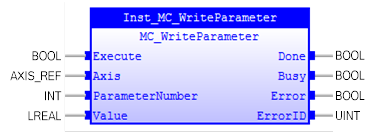

MC_WriteBoolParameter
Writes a value to the specified axis’ parameter of type BOOL.

Description:
This function block writes the Boolean value to a specific
Boolean parameter which specified with parameter number. With a rising edge of
‘execute’, if no error occurs, ‘Value’ will be successfully written. This
Function Block does not affect the PLCopen machine state. It can work in any
states.
Make sure the input and output parameters are of data type
indicated in the table below.
Use
MC_WriteParameter
for non-BOOL
axis’s parameters.
Inputs/Outputs:
|
Name
|
Data Type
|
Description
|
|
INPUTS
|
|
Execute
|
BOOL
|
Write the value of the parameter at
rising edge
|
|
Axis
|
AXIS_REF
|
Reference to the axis
|
|
ParameterNumber
|
INT
|
Parameter
number of the specified parameter.
Refer
to“
Parameters
”.
|
|
Value
|
BOOL
|
New
value of the specified parameter
|
|
OUTPUTS
|
|
Done
|
BOOL
|
Parameter
is written successfully.
|
|
Busy
|
BOOL
|
The
FB is not finished and new output value is to be expected.
|
|
Error
|
BOOL
|
Signals
that an error has occurred within the FB.
|
|
ErrorID
|
UINT
|
Error
identification.
|
Examples:
Example 1:
|
 Example
Example
|
|
(*Example for
MC_WriteBoolParameter *)
bValue :=
FALSE
;
ParNum :=
10000
;
(* PARBOOLTEST *)
inst_WriteBoolParameter(Execute:=bExecute,
Axis:=Axis0Ref,
ParameterNumber:=ParNum,
Value:=bValue);
bDone := inst_WriteBoolParameter.Done;
bBusy := inst_WriteBoolParameter.Busy;
bError := inst_WriteBoolParameter.Error;
ErrorId := inst_WriteBoolParameter.ErrorID;
|
See also:
MC_WriteParameter
,
Parameters